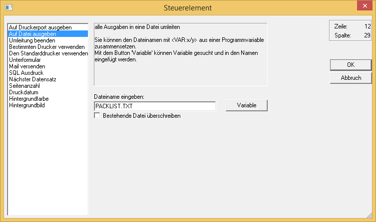

Die Druckumleitung bietet Ihnen die Möglichkeit, Daten in Dateien auszugeben. Als Beispiel nehmen wir an, dass Sie die Packliste in eine ASCII-Datei mit dem Namen "PACKLIST.TXT" ausgeben möchten.
Hierzu wählen Sie aus dem Werkzeugkasten die Funktion "Steuerelement" .

Selektieren Sie im Auswahlfenster die Funktion "Auf Datei ausgeben".
In das Eingabefeld "Dateiname eingeben" wird der Name der Datei eingegeben, die mit den Daten beschickt werden soll.
Auf dem Formular wird nun der Befehl für die Druckumleitung abgelegt:
ü
Tragen Sie nun rechts neben dem Befehl oder darunter die Variablen ein, welche in die ASCII-Datei ausgegeben werden sollen. Eine solche Zeile könnte folgendermaßen aussehen:
Zuerst wird die Artikelnummer und die Artikelbezeichnung ausgegeben (nach beiden Variablen wird ein Semikolon angehängt, welches als Trennzeichen verwendet wird). Danach wird die gelieferte Menge ausgegeben. Anschließend folgt nochmals ein Semikolon (diesmal als normales Text-Element), danach wird der Einzelpreis ausgegeben. Das 13,10 ist ein Steuerzeichen und bewirkt einen Zeilenumbruch in der Ausgabedatei. Das AUX OFF beendet die Druckumleitung.
Um die Druckumleitung zu beenden, fügen Sie erneut ein Steuerelement ein und wählen die Funktion "Umleitung beenden" aus.
Damit wird der Standard-Druckeranschluss aktiviert und die Druckumleitung beendet. Das Ende der Druckumleitung wird durch den Befehl "AUX OFF" markiert. In Ihrem WinLine-Verzeichnis befindet sich nun die Datei "PACKLIST.TXT", die Sie mit jedem Text-Editor öffnen können.